Pulseband is a fictional wearable technology that allows users to track their heart rate and blood pressure data in order to lower the risk of heart attack or heart disease. My teammate and I were charged with designing and developing a responsive web application for Pulseband.
The Design Process
As we only had 3 weeks to design and code the working prototype, we used a previous team's mobile app design, which was backed with both competitive and user experience research.
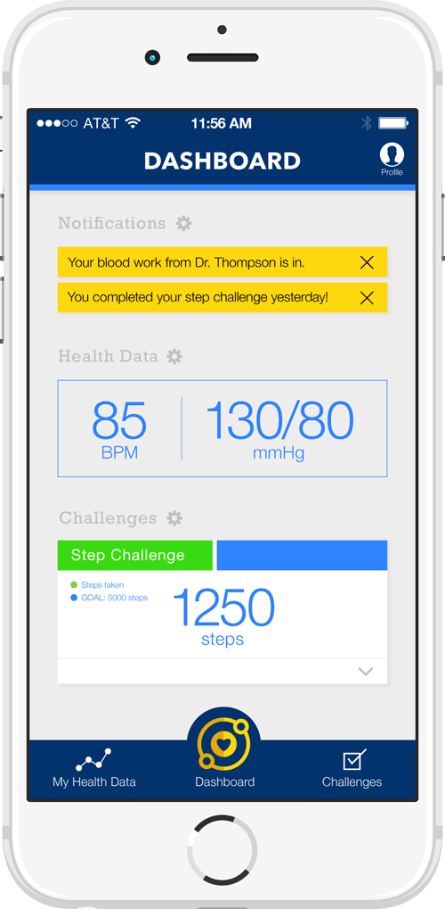
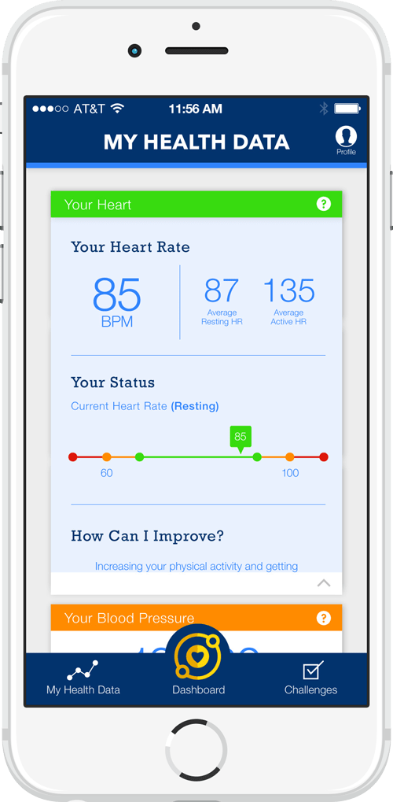
Mobile App Design courtesy of Team Campfire
We made a quick style tile, determining the fonts and helping to narrow the color palette of the dashboard.
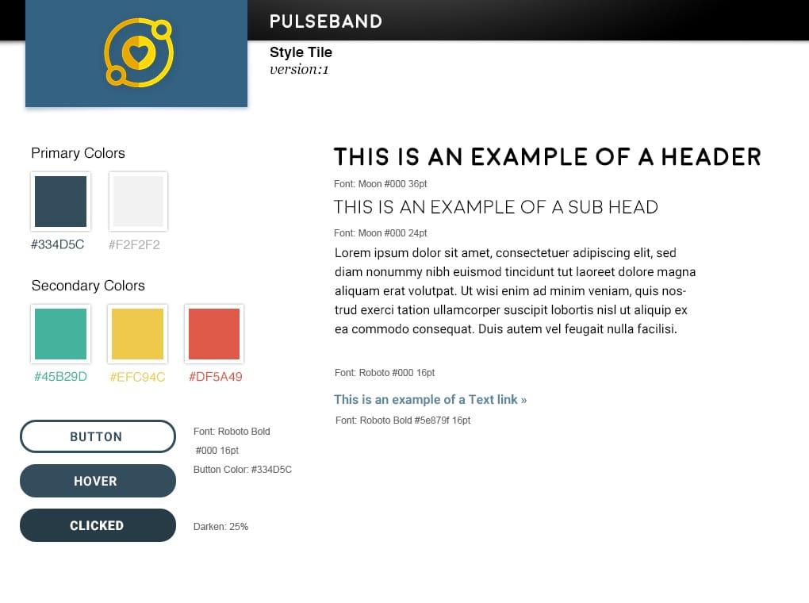
Using Team Campfire's mobile designs as a content map, we then started sketching the layout for the dashboard. We used the mobile designs as a guide for content organization and data presentation.
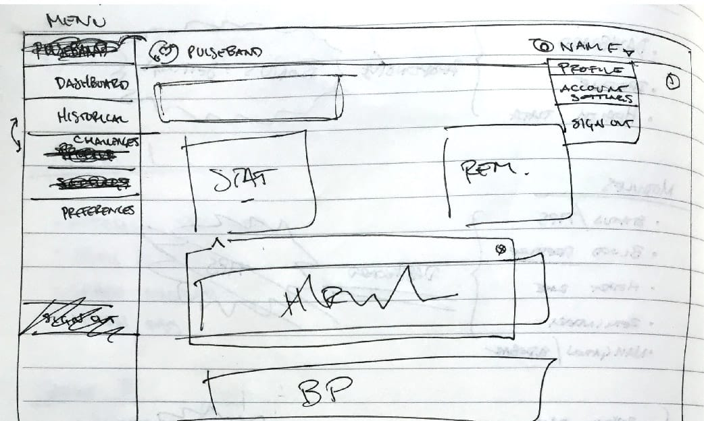
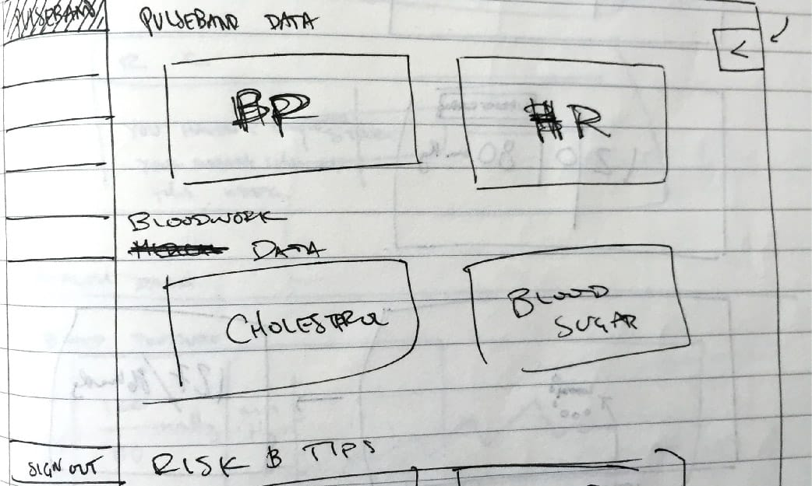
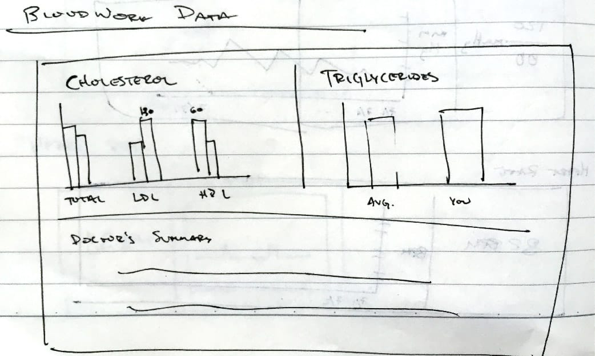
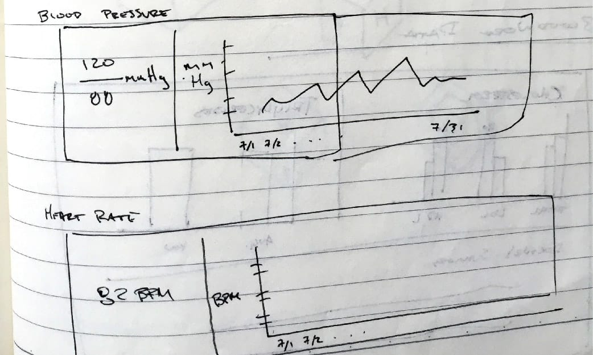
Combining our sketches with our style tile, we came up with these final designs.
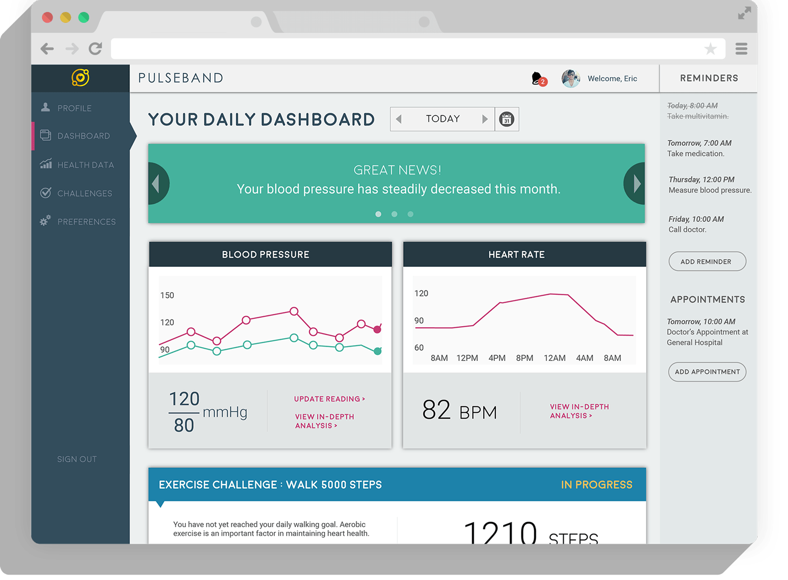
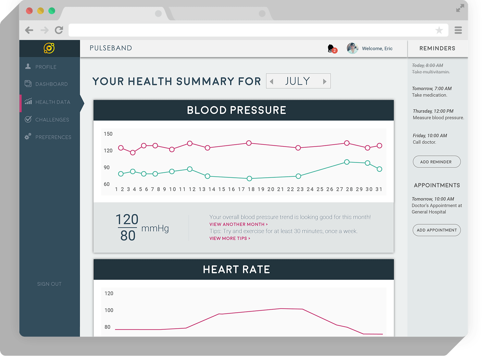
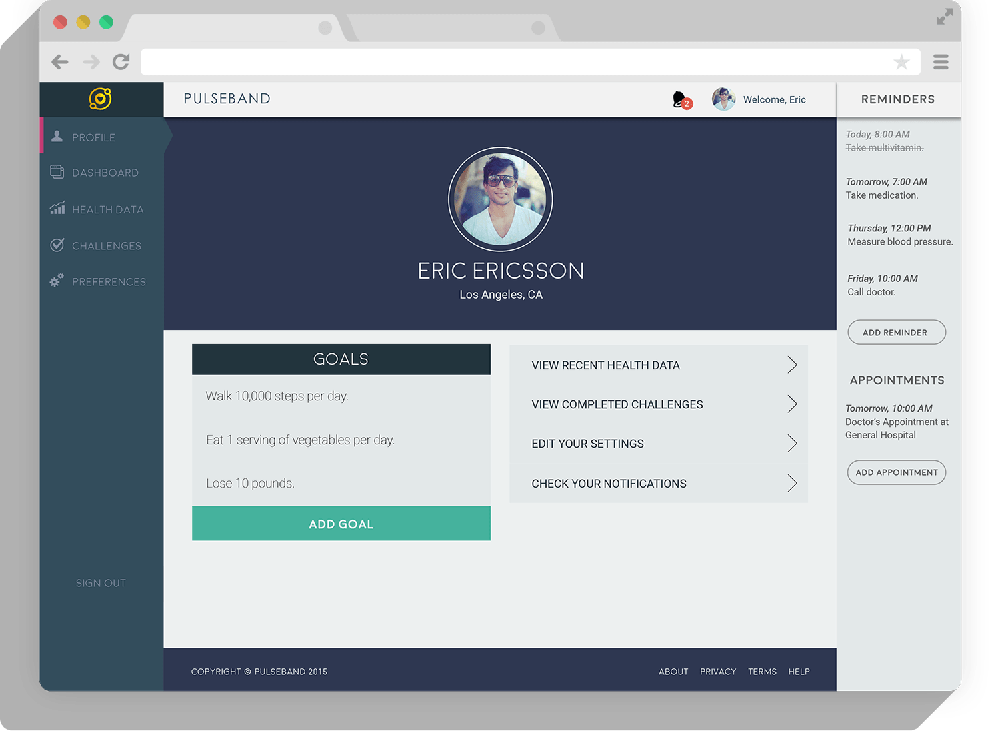
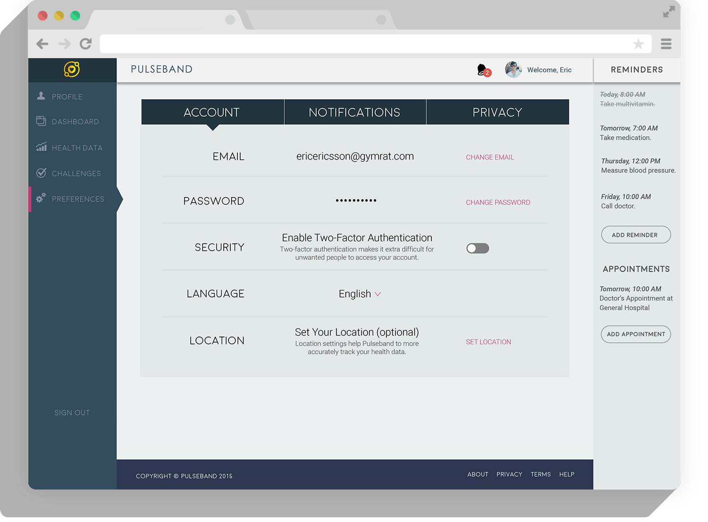
Development
HTML + CSS
My teammate worked primarily with the HTML and CSS to convert our designs into a responsive web page.
D3.js + JSON + Ajax
I worked with D3.js and mock JSON data in order to simulate line graphs displaying heart rate and blood pressure trends over time. I also utilized a simple bar chart for representing the monthly blood work data.
Angular.js
Lastly, we spent a couple days learning syntax and getting a working understanding of Angular.js. After we got the basics down, we combined our codes and began working with Angular to dynamically inject content into our dashboard.